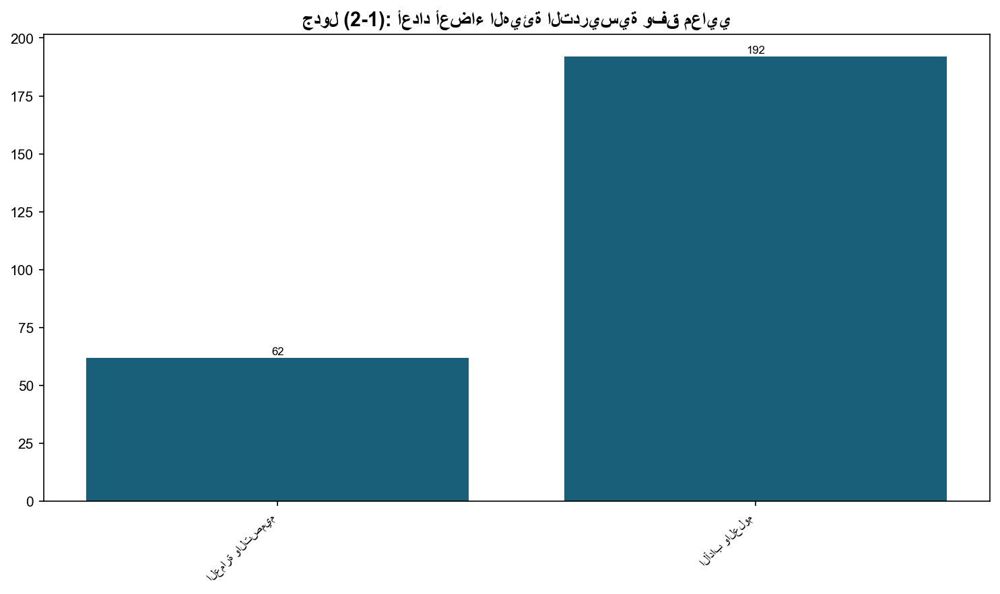

2.2: إجمالي الزيادة في عدد أعضاء الهيئة التدريسية طبقاً لمعايير الاعتماد الخاص
📝 1 فقرة
📋 1 جدول
📊 1/3 شكل
يُعدّ اهتمام الجامعة بتوفير عددٍ كافٍ من أعضاء الهيئة التدريسية والإدارية الأكفياء، أمرًا ضروريًا، وعلى قمة سلم أولوياتها؛ نظرًا لما يسهم به في تنفيذ الجامعة للمهام الأساسية، المتعلّقة بتحقيق رؤيتها، ورسالتها، وأهدافها، وتنفيذ برامجها الأكاديمية، والبحثية، والمسؤولية المجتمعية، مع مراعاة معايير الجودة فيها؛ إذ يتحمَّل أعضاء الهيئة التدريسية العبء الأساسي في إنجاز هذه المسؤوليات. ويُبيّن الجدول التفصيلي الآتي (1-2) أعداد أعضاء الهيئة التدريسية، موضَّحًا فيه نسب حملة درجة الماجستير، والدكتوراه.

جدول (2-1): أعداد أعضاء الهيئة التدريسية وفق معايير الاعتماد الخاص.
📊 57 صف من البيانات
| الكلية | الرفم | التخصصات | الطاقة من الهيئة | عدد الطلبة فصل اول | هيئة تدريسية | هيئة تدريسية | |||||
|---|---|---|---|---|---|---|---|---|---|---|---|
| الكلية | الرفم | التخصصات | الطاقة من الهيئة | عدد الطلبة فصل اول | ماجستير | ماجستير | ملاحظات | ملاحظات | ملاحظات | ملاحظات | ملاحظات |
| الكلية | الرفم | التخصصات | الطاقة من الهيئة | عدد الطلبة فصل اول | ماجستير | ماجستير | ملاحظات | ملاحظات | ملاحظات | ملاحظات | ملاحظات |
| العمارة والتصميم | 1 | هندسة العمارة | 199 | 123 | 3 | 3 | |||||
| العمارة والتصميم | 2 | التصميم الداخلي | 300 | 250 | 3 | 3 | |||||
| العمارة والتصميم | 3 | التصميم الجرافيكي | 206 | 122 | 3 | 3 | |||||
| العمارة والتصميم | 4 | التحريك | 181 | 129 | 1 | 1 | |||||
| العمارة والتصميم | 5 | تصميم الفلم الرقمي | 118 | 62 | 1 | 1 | |||||
| الآداب والعلوم | 6 | الكيمياء | 189 | 113 | 1 | 1 | |||||
| الآداب والعلوم | 7 | الرياضيات | 19 | 16 | 1 | 1 | |||||
| الآداب والعلوم | 8 | اللغة العربية وآدابها | 181 | 122 | 0 | 0 | |||||
| الآداب والعلوم | 9 | اللغة الانجليزية وآدابها | 107 | 47 | 0 | 0 | |||||
| الآداب والعلوم | 10 | اللغة الانجليزية / الترجمة | 275 | 114 | 0 | 0 | |||||
| الآداب والعلوم | 11 | اللغة الانجليزبة التطبيقية | 115 | 24 | 0 | 0 | |||||
| الآداب والعلوم | 12 | تربية طفل | 165 | 56 | 0 | 0 | |||||
| الآداب والعلوم | 13 | معلم الصف | 296 | 192 | 0 | 0 | |||||
| الآداب والعلوم | 14 | اللغة الفرنسية | 200 | 46 | 0 | 0 | |||||
| الآداب والعلوم | 15 | التربية الرياضية | 229 | 236 | 0 | 0 | |||||
| الاعلام | 16 | الصحافة والإعلام الرقمي | 320 | 132 | 1 | 1 | |||||
| الاعلام | 17 | الاذاعة | 200 | 129 | 1 | 1 | |||||
| الاعلام | 18 | الاعلام الترويجي الرقمي | 123 | 60 | 0 | 0 | |||||
| الحقوق | 19 | الحقوق | 552 | 574 | 2 | 2 | |||||
| الصيدلة | 20 | التغذية | 296 | 220 | 1 | 1 | |||||
| الصيدلة | 21 | الصيدلة | 662 | 611 | 5 | 5 | |||||
| الصيدلة | 22 | التحاليل الطبية | 79 | 51 | 1 | 1 | |||||
| تكنولوجيا المعلومات | 23 | واقع افتراضي | 89 | 33 | 0 | 0 | |||||
| تكنولوجيا المعلومات | 24 | ذكاء صناعي | 543 | 547 | 1 | 1 | |||||
| تكنولوجيا المعلومات | 25 | علم الحاسوب | 290 | 270 | 1 | 1 | |||||
| تكنولوجيا المعلومات | 26 | هندسة البرمجيات | 204 | 208 | 1 | 1 | |||||
| تكنولوجيا المعلومات | 27 | الامن | 264 | 256 | 1 | 1 | |||||
| هندسة مدنية | 28 | هندسة مدنية | 150 | 83 | 0 | 0 | |||||
| العلوم الادارية | 29 | ادارة اعمال | 357 | 376 | 2 | 2 | |||||
| العلوم الادارية | 30 | محاسبة | 317 | 271 | 1 | 1 | |||||
| العلوم الادارية | 31 | ادارة سلاسل التوريد والعلوم اللوجستية | 120 | 101 | 0 | 0 | |||||
| العلوم الادارية | 32 | علوم مالية | 182 | 40 | 2 | 2 | |||||
| العلوم الادارية | 33 | تسويق | 205 | 174 | 1 | 1 | |||||
| العلوم الادارية | 34 | تسويق رقمي | 206 | 188 | 0 | 0 | |||||
| العلوم الادارية | 35 | تكنولوجيا مالية | 308 | 235 | 0 | 0 | |||||
| العلوم الادارية | 36 | ذكاء الاعمال | 561 | 610 | 0 | 0 | |||||
| العلوم الادارية | 37 | الاعمال والتجاره الالكترونية | 490 | 389 | 1 | 1 | |||||
| طب الاسنان | 38 | طب وجراحة الاسنان | 200 | 199 | 3 | 3 | |||||
| الدراسات العليا | 39 | ماجستير / لغة انجليزية ترجمة | 44 | 25 | 0 | 0 | |||||
| الدراسات العليا | 40 | ماجستير / صيدلة | 66 | 35 | 0 | 0 | |||||
| الدراسات العليا | 41 | ماجستير / صحافة | 44 | 21 | 0 | 0 | |||||
| الدراسات العليا | 42 | ماجستير / لغة عربية | 44 | 28 | 0 | 0 | |||||
| الدراسات العليا | 43 | ماجستير / ادارة أعمال | 44 | 37 | 0 | 0 | |||||
| الدراسات العليا | 44 | ماجستير / تصميم داخلي | 33 | 23 | 0 | 0 | |||||
| الدراسات العليا | 45 | ماجستير كيمياء | 50 | 39 | 0 | 0 | |||||
| الدراسات العليا | 46 | ماجستير حقوق | 44 | 35 | 0 | 0 | |||||
| الدراسات العليا | 47 | ماجستير تغذية | 50 | 45 | 0 | 0 | |||||
| الدراسات العليا | 48 | ماجستير المناهج والتعليم الالكتروني | 44 | 11 | 0 | 0 | |||||
| الدراسات العليا | 49 | ماجستير رياضبات | 33 | 8 | 0 | 0 | |||||
| الدراسات العليا | 50 | ماجستير مدن مستدامة | 33 | 3 | 0 | 0 | |||||
| الدراسات العليا | 51 | ماجستير ادارة هندسية | 33 | 6 | 0 | 0 | |||||
| الدراسات العليا | 52 | ماجسنير تسويق رقمي | 44 | 8 | 0 | 0 | |||||
| المجموع | 10104 | 7733 | 38 | 38 | |||||||
| المحصلة | المحصلة |